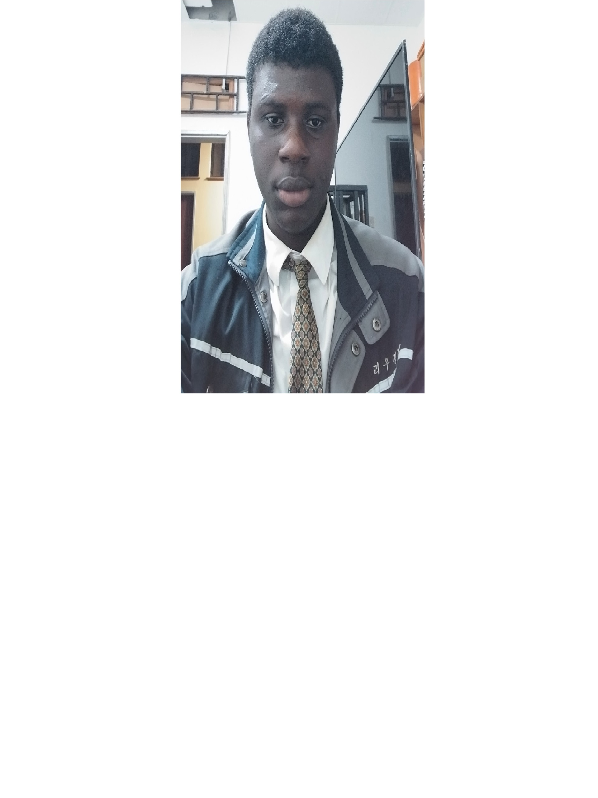

Samson Obaji Ekenedirichukwu | WDD 130
Hello! My name is Samson Obaji, and I am from Ebonyi State, Nigeria. I enjoy watching anime and singing hymns. As a Pathway student studying software development, I am passionate about learning new coding skills and building innovative solutions. I am eager to grow in the field and apply my knowledge to real-world projects.